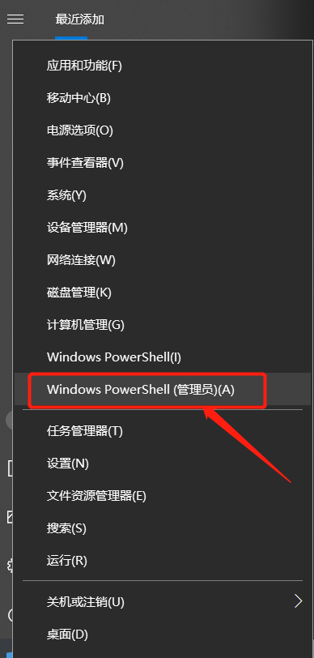
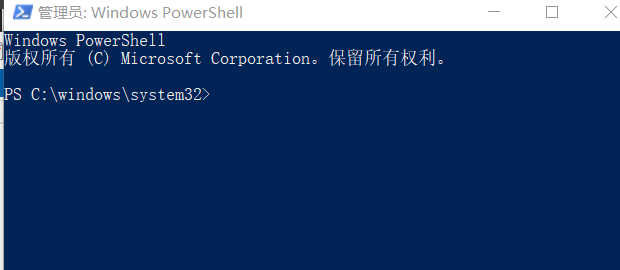
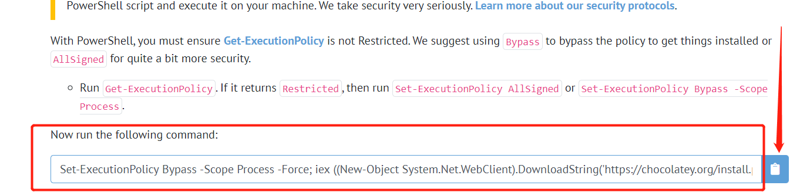

一、安装
安装 Chocolatey，需要 管理员：Windows PowerShell 命令行工具下面去执行一行命令（cmd）， 1、鼠标右击左下角的开始，弹出如下图：

2、点击上图标注处，弹出管理员：Windows PowerShell终端，如下图：

3、打开Chocolatey官网,复制如图标注的代码到上图打开的命令行窗口运行

４、检查安装结果
$ choco -?
This is a listing of all of the different things you can pass to choco.
Commands
* list - lists remote or local packages
* find - searches remote or local packages (alias for search)
* search - searches remote or local packages (alias for list)
* info - retrieves package information. Shorthand for choco search pkgname --exact --verbose
* install - installs packages from various sources
* pin - suppress upgrades for a package
* outdated - retrieves packages that are outdated. Similar to upgrade all --noop
* upgrade - upgrades packages from various sources
* uninstall - uninstalls a package
* pack - packages up a nuspec to a compiled nupkg
* push - pushes a compiled nupkg
* new - generates files necessary for a chocolatey package from a template
* sources - view and configure default sources (alias for source)
* source - view and configure default sources
* config - Retrieve and configure config file settings
* feature - view and configure choco features
* features - view and configure choco features (alias for feature)
* setapikey - retrieves, saves or deletes an apikey for a particular source (alias for apikey)
* apikey - retrieves, saves or deletes an apikey for a particular source
* unpackself - have chocolatey set itself up
* version - [DEPRECATED] will be removed in v1 - use `choco outdated` or `cup <pkg|all> -whatif` instead
* update - [DEPRECATED] RESERVED for future use (you are looking for upgrade, these are not the droids you are looking for)
译为：
*list-列出远程或本地包
*find-搜索远程或本地包（搜索别名）
*搜索-搜索远程或本地包（列表的别名）
*信息-检索包信息。choco search pkgname的简写--准确--冗长
*安装-安装来自不同来源的软件包
*pin-禁止升级包
*过时-检索过时的包。类似于全部升级--noop
*升级-从不同来源升级软件包
*卸载-卸载包
*pack-将nuspec打包成编译的nupkg
*push-推送编译的nupkg
*新建-从模板生成巧克力包所需的文件
*源-查看和配置默认源（源的别名）
*源-查看和配置默认源
*config-检索并配置配置文件设置
*功能-查看和配置choco功能
*功能-查看和配置choco功能（功能的别名）
*setapikey-检索、保存或删除特定源的apikey（apikey的别名）
*apikey-检索、保存或删除特定源的apikey
*打开包装-准备好巧克力
*版本-[已弃用]将在v1中删除-改用“choco过时”或“cup<pkg all>-whatif”
*更新-[不推荐]保留以备将来使用（您正在寻找升级，这些不是您正在寻找的机器人）
二、使用
以gitbook-editor为例，
PS C:\windows\system32> choco search gitbook-editor
Chocolatey v0.10.15
gitbook-editor 7.0.12 [Approved]
1 packages found.
PS C:\windows\system32> choco install gitbook-editor
Chocolatey v0.10.15
Installing the following packages:
gitbook-editor
By installing you accept licenses for the packages.
Progress: Downloading gitbook-editor 7.0.12... 100%